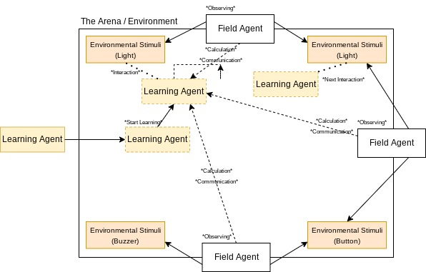

Project Introduction
A brief summary of our project and its vision
Abstract
This project presents the construction and design of a framework for testing and developing a centralized, collaborative, model-free reinforcement simulation. Although similar algorithms exist and the general trend is towards distributed or federated learning, centralized learning can often be cheaper since the field, or “dummy”, agents can be affordable and standardized when controlled by a stronger “commander” machine learning agent that controls the dummy agents when trained or reinforced in some way. This project built this framework and uncovered the significance of sensor noise and slipperiness, even in a controlled environment. Additionally, the framework could potentially be used with many other algorithms as well.
Team
Meet the engineers who brought this vision to life
Yash Gharat
Computer EngineerYash Gharat is a senior at the University of Central Florida and will receive his Bachelor’s of Science in Computer Engineering in May of 2022. He plans to continue his education with a Masters in Computer Science while working at CAE Inc. His primary interests are in software engineering and full-stack development.
Anthony Soffian
Electrical EngineerAnthony Soffian is a senior at the University of Central Florida, and will receive their Electrical Engineering Bachelors Degree in May of 2022. Currently, they plan to find an entry level position in the greater Orlando or Jacksonville area to further expand their experiences as well as their interests in athletics, medical, and education inclined topics on EE or CS pathways.
Andrew Cuevas
Computer EngineerAndrew Cuevas is a senior at the University of Central Florida and is to receive his Bachelor’s Degree in Computer Engineering in the May of 2022. He has freelance software development experience and intends to look for a more permanent position in the near future, but is open to work in any areas of his interests including creative fields such as dance, music, and game development.
Advisors
Chinwendu Enyioha, PhD
EECS Assistant ProfessorDr. Samuel Richie, PhD
Associate Professor EmeritusDemos
Documentation
Project Block Diagram
Initial Project Description
Our initial project was constructed with the intention of completing the same task that we ended up including in the final iteration of our project, but utilizing a different approach. We switched from a more maze based implementation to a design that was seamless and more focused on the machine learning aspect of the project, and stayed true to the ideals of scalability, expansibility, and affordability.
The initial design used a game that featured the same three components of the Dummy, the (Envoy) Commander, and the Arena. This arena would later be changed to become the environment but the function of controlling the flow of the scenario is the same.
The initial block diagram focused on the networked association between the dummy agents handling tasks such as color recognition, physical understanding and problem solving, and additionally mechanical navigation using wheels and various sensors. By reducing the complexity of the sensors used and narrowing the tasks each agent in the arena had to complete and understand, the project became more realistic and better adhered to the intentional research and principle centric ideals we had in mind.
For a deeper understanding of the changes that were made, the differences can be seen by exploring the lifetime of the project seen through the documents included within.